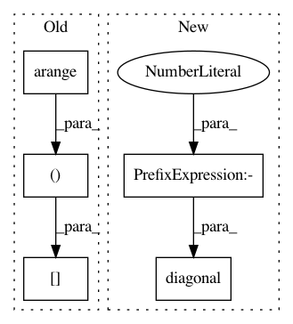

da78112114aa02fd38ad23da4d926105f31c5f9e,gpytorch/lazy/chol_lazy_tensor.py,CholLazyTensor,_chol_diag,#CholLazyTensor#,33
Before Change
if not hasattr(self, "_chol_diag_memo"):
if self._chol.ndimension() == 3:
batch_size, diag_size, _ = self._chol.size()
batch_index = torch.arange(0, batch_size, dtype=torch.long, device=self.device)
batch_index = batch_index.unsqueeze(1).repeat(1, diag_size).view(-1)
diag_index = torch.arange(0, diag_size, dtype=torch.long, device=self.device)
diag_index = diag_index.unsqueeze(1).repeat(batch_size, 1).view(-1)
self._chol_diag_memo = self._chol[batch_index, diag_index, diag_index].view(batch_size, diag_size)
else:
self._chol_diag_memo = self._chol.diag()
return self._chol_diag_memo
After Change
@property
def _chol_diag(self):
if not hasattr(self, "_chol_diag_memo"):
self._chol_diag_memo = self._chol.diagonal(dim1=-2, dim2=-1).clone()
return self._chol_diag_memo
def inv_quad_logdet(self, inv_quad_rhs=None, logdet=False, reduce_inv_quad=True):
In pattern: SUPERPATTERN
Frequency: 3
Non-data size: 5
Instances
Project Name: cornellius-gp/gpytorch
Commit Name: da78112114aa02fd38ad23da4d926105f31c5f9e
Time: 2019-01-24
Author: gpleiss@gmail.com
File Name: gpytorch/lazy/chol_lazy_tensor.py
Class Name: CholLazyTensor
Method Name: _chol_diag
Project Name: cornellius-gp/gpytorch
Commit Name: ecd61db602342c9580fc047ccdb296a1d8668d96
Time: 2021-03-01
Author: wjm363@nyu.edu
File Name: gpytorch/functions/_diagonalization.py
Class Name: Diagonalization
Method Name: backward
Project Name: cornellius-gp/gpytorch
Commit Name: 308a18094d31d5cd2fbb7d942212669141dd8cec
Time: 2019-04-01
Author: jake.gardner@uber.com
File Name: gpytorch/utils/cholesky.py
Class Name:
Method Name: psd_safe_cholesky